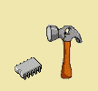

CETTE RUBRIQUE EST CONSACREE AUX (QUELQUES) QUESTIONS QUE PEUVENT SE POSER LES ELECTRONICIENS ADEPTES DU LANGAGE C, ALORS NE VOUS CASSER PLUS LA TETE !
COMMENT FAIRE ...
...pour commander un afficheur LCD en mode 4 bits?
...pour commander un afficheur LCD en mode 8 bits?
...pour émettre et recevoir des caractères sur la liaison série asynchrone des PIC16F87X ?
...pour simuler une liaison série avec un pic sans UART ?
...pour utiliser le convertisseur analogique numérique (CAN) ?
... pour lire et écrire des données dans la mémoire EEPROM des PIC ?
... pour créer une entrée d'interruption externe supplémentaire ?
...pour réaliser un clone d'émulateur programmateur de PIC16F8XX (MPLAB ICD) ?
... pour réaliser un programmateur de 87LCP76x ?
... programmer la plupart des mémoires existantes (EPROM,EEPROM, FLASH, I2C, µC...) ?